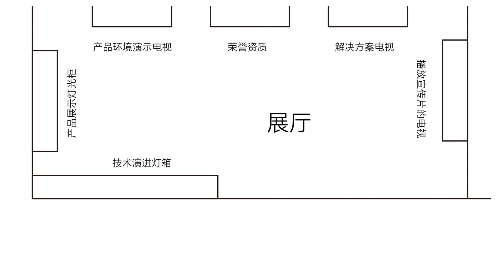

三十多个区域逐一规划
每个区域写清责任部门、位置、成品尺寸、内容板块和字数要求，做成一份所有人都看得懂的清单。
Case 03 · 公司总部文化墙统筹
深圳前海总部五、六两层，三十多个区域、十几个部门。作为项目负责人，我统筹内容规划、跨部门协调、动线设计、供应商比价与施工验收——展厅是其中的核心。
01 — 项目概览
范围包括前台形象、公司展厅、各部门墙面、走廊、荣誉资质墙、客户墙等三十多个区域，涉及生产、技服、研发、人资、财务、品宣等十多个部门。一个设计师解决不了这种规模的事，尤其是内容编写和规划——需要召集各部门一起讨论、定稿、执行。
层办公空间 · 五楼与六楼
区域与墙面
协作部门
项目总预算 · 含税
每个区域写清责任部门、位置、成品尺寸、内容板块和字数要求，做成一份所有人都看得懂的清单。
技服部写会议标准、研发部写 IPD 流程、人资部写企业理念。会后发清单和纪要，把口头承诺变成白纸黑字。
评估供应商资质、比稿、比价，重点区域升级工艺，次要区域该砍就砍，把钱花在访客真正会看的地方。
每个区域明确责任人和安装时间，现场解决墙面、高度、尺寸这些图纸上看不出来的问题，直到收尾。
02 — 执行流程
真正做下来，从需求到验收有七个阶段，每一步都可能停在别人那里，每一步都需要有人推。合同 2022 年 6 月签，2023 年 2 月排安装计划，7 月才结清——中间大半年，大部分时间花在协调和现场。
03 — 内容统筹
设计一面墙只要几个小时，确认这面墙该讲什么要跑好几趟。我做了一份逐区域的需求清单——精确到责任部门、位置、尺寸、内容板块和字数要求，让各部门知道自己该提供什么。
一面墙一行，不留模糊地带。表格发出去，部门就知道自己欠什么、什么时候交。
每块内容 40–80 字、每句 6–12 字。尺度决定信息量，不能等排版时才发现放不下。
访客从电梯厅进来，先建立第一印象，再进展厅集中理解公司，出来沿弧墙看见历程与客户。
04 — 展厅设计
从电梯出来经前台向右进入展厅。它集中了公司最想讲的东西——产品跑起来什么样、谁认可、能力覆盖到哪、技术怎么长出来的。访客停留不过十来分钟，所以每一面墙都得有存在的理由：背墙三块主内容，两侧各一块，转身出门那一面是一条长灯箱。下面是按最终布局在浏览器里搭出来的展厅，相机站在房间里：拖动转头看四周，点内容或图例走过去。

ZONE 01
进门左手第一块。产品跑在什么环境里、界面长什么样，用动态画面讲比用文字讲省一半时间。
05 — 实景与延展
电梯厅出来是前台，右转进展厅；出了展厅沿走廊一路走下去，发展规划与服务网络、政府来访照片墙、弧形的企业文化墙与客户 LOGO、发展历程、荣誉资质墙依次出现，最后绕回前台。这些墙面同属一套视觉语言，各自承担不同的信息。鼠标移到右边任意一站，平面图上会亮出它的位置。点右边任意一站，平面图上会亮出它的位置。
整条动线的起点，也是唯一一处不在展厅里的重点墙面。四米出头的一面弧墙，只放一组标识——4050 × 2850 的墙上，标识组合占 1880 宽、居中，下沿离地 1900——比 1600 的站立视平线高出一头，进门抬眼正对。上方那片三角形穿孔从密到疏往下散开，背后打光，把大面积的白墙从「空」变成「有质感的空」。

拖动可环视
其余图位待补：各部门墙面的现场照与设计稿陆续补齐，规则同上——设计稿按毫米立成三维，实景照并排放在下面。
06 — 荣誉分层
公司这些年攒下的资质、奖项和牌匾足够铺满一整面墙。我按含金量把它们分层，也因此拆成了两面墙：最重量级的放进展厅、用重点照明单独呈现；其余的集中到市场部的第二面荣誉墙。
国家专精特新「小巨人」、DAMA 数据治理相关奖项、Gartner 技术成熟度曲线收录——分量最重的几张放进展厅，单独打光、周围留白。专业客户会停下来看的就是这几张，多挂一张都是干扰。
数据安全行业的权威认证、第三方评测入选与产品类奖项。单看每一张分量有限，成组陈列才说得清「在这个领域被同行和第三方持续认可」。
软著与荣誉牌匾不需要逐张阅读，用展柜规整陈列，把「积累了很多年」一眼交代完。
07 — 成本控制
这句听着像没说的要求，其实是整个项目的成本主线。我把制作部分逐项做了前后对比：哪面墙升级工艺、升级到什么材质、价格差多少，哪些点位干脆不做。这张表后来既是向领导汇报的材料，也是跟供应商谈判的筹码。
原合同制作报价 · 不含税
逐项变更后应付
两轮谈判后确认的增项
取消低价值点位省下的钱
展厅那 30,000 元是这场谈判里我最在意的一项：总价一分没涨，工艺却从喷绘贴换成了蓝色烤漆背光字、PVC 线条、亚克力盒子和灯箱。变更后供应商的应付比原合同多出两万多，最终以 15,000 元确认；加上后续零星新增，2023 年 7 月用一份补充协议 2.15 万元一次性结清。
08 — 总结与收获
没有内容层级，再精致的墙面也只是把信息堆高。参观顺序和文案脚本必须排在形式之前，这个次序一旦颠倒，后面每一步都要返工。
每个部门都觉得自己的墙最重要。最花精力的不是设计，是把这些诉求拉到一张清单上对齐——先做需求表、再逐个部门确认，比开大会扯皮高效得多。
领导很看重文化墙，但没有时间陪我从头推导。后来每次汇报我都把效果图、材质和价格区间放在一起，让判断压缩成几个能当场拍板的选项。
砍掉走廊、商务会议室、文控室这些访客根本不会停留的点位，把省下的钱压到形象墙和展厅。同一笔钱，被看见的次数差了几十倍。
墙面不平、高度对不上、消防设施挡住版面。提前去现场量、去盯，比装完再返工便宜得多——这是这个项目里最贵的一课。
Maridian 作为项目负责人，统筹了昂楷科技深圳前海总部五、六两层的文化墙与展厅项目，覆盖三十多个展示区域、十余个协作部门，项目总预算约 29 万元。
项目不从墙面造型开始，而是先完成内容清单、字数规格与参观动线：访客从前台进入展厅集中理解公司，沿弧形文化墙看见发展历程与典型客户，最后回到办公区。展厅作为核心，用四面墙分担产品演示、荣誉资质、解决方案、实体陈列与技术演进；客户案例则整块前移到前台正对大门的弧墙上，进门第一眼就看得见。
他同时负责供应商筛选比价、图纸深化、材料与工艺取舍、预算变更汇报、施工排期与现场验收。制作部分逐项做出前后对照表，主动取消四处低价值点位，把预算集中到形象墙与展厅，并通过两轮谈判把变更增项从两万余元压到 1.5 万元。
项目从 2022 年 6 月签约推进到 2023 年 7 月结算，最终以一份补充协议完成全部增项结清。
问问 AI 关于 Maridian